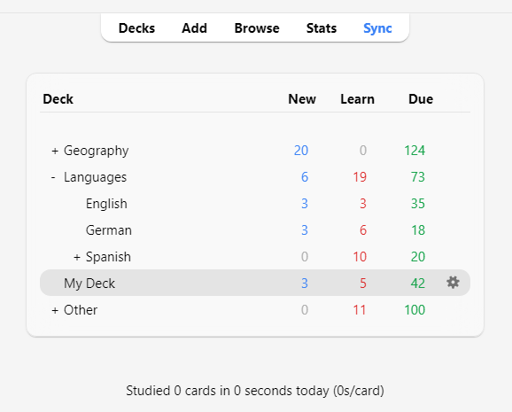
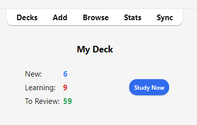
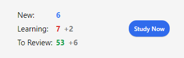

Oʻrganish
Sizga yoqqan toʻplamni topgan yoki oʻz yozuvlaringizni kiritgan boʻlsangiz, oʻrganishni boshlash vaqti keldi.
Toʻplamlar
Anki'da oʻrganish hozir tanlangan toʻplam va uning ichidagi barcha ichki toʻplamlar bilan cheklanadi.
Toʻplamlar oynasida (decks screen) toʻplamlaringiz va ichki toʻplamlaringiz roʻyxat koʻrinishida chiqadi. Shu kunga tegishli yangi (New), oʻrganilayotgan (Learn) va takrorlashga muddati kelgan (Due / To Review) kartalar ham shu yerda koʻrsatiladi.

Toʻplamni bossangiz, u "joriy toʻplam" boʻladi va Anki oʻrganish oynasiga oʻtadi. Asosiy oynaning yuqorisidagi "Decks" (Toʻplamlar) ni bosib, istalgan vaqtda toʻplamlar roʻyxatiga qaytishingiz mumkin. (Klaviatura orqali yangi toʻplam tanlash uchun menyudagi Study Deck (Toʻplamni oʻrganish) amalidan foydalanishingiz yoki hozir tanlangan toʻplamni oʻrganish uchun S tugmasini bosishingiz ham mumkin.)
Toʻplamning oʻng tomonidagi tishli gʻildirak (gears) tugmasini bosib, toʻplamning nomini oʻzgartirishingiz yoki uni oʻchirishingiz, uning sozlamalarini oʻzgartirishingiz yoki uni eksport qilishingiz mumkin.
Oʻrganishga umumiy koʻrinish
Oʻrganish uchun toʻplamni bosganingizdan soʻng bugun nechta karta takrorlashga kelganini koʻrsatadigan oyna paydo boʻladi. Bu "toʻplamga umumiy koʻrinish" (deck overview) oynasi deb ataladi:

Kartalar uch turga boʻlinadi: New (Yangi), Learning (Oʻrganilayotgan) va To Review (Takrorlash). Agar toʻplam sozlamalarida Bury siblings (qardosh kartalarni yashirish) yoqilgan boʻlsa, nechta karta yashirilishi (buried) kul rangda koʻrsatilishi mumkin:

Oʻrganish seansini boshlash uchun Study Now (Hozir oʻrganish) tugmasini bosing. Anki kun uchun koʻrsatilishi kerak boʻlgan kartalar tugaguncha sizga kartalarni koʻrsatib boradi.
Oʻrganish paytida klaviaturadagi S tugmasini bosib, umumiy koʻrinishga qaytishingiz mumkin.
Savollar
Karta koʻrsatilganda avval faqat savol koʻrinadi. Javob haqida oʻylab koʻrgach, Show Answer (Javobni koʻrsatish) tugmasini bosing yoki Space (probel) tugmasini bosing. Shunda javob koʻrsatiladi. Javobni eslash uchun biroz vaqt ketishi mumkin, bunda hech qanday muammo yoʻq, lekin umumiy qoida shuki, taxminan 10 soniya ichida javob bera olmasangiz, eslashga urinib qiynalgandan koʻra, javobni koʻrsatib, keyingisiga oʻtgan yaxshiroq.
Javob tugmalari
Javob koʻrsatilgach, oʻzingiz oʻylagan javobni koʻrsatilgan javob bilan solishtiring va quyidagi tugmalardan birini tanlang.
-
Again (Yana): Javobingiz notoʻgʻri boʻlsa yoki javobni eslay olmasangiz, shuni tanlang. Javobingiz qisman toʻgʻri boʻlsa, oʻzingizga nisbatan qatʼiy boʻling: agar Anki'dan tashqari real hayotda bu xato hisoblansa, Anki'da ham xato hisoblanadi. Odatda bu tugmani vaqtning taxminan 5-20 foizida ishlatasiz.
Tezkor tugma: 1
-
Hard (Qiyin): Javobingiz toʻgʻri boʻlsa-yu, lekin unda shubhalangan boʻlsangiz yoki eslash uzoq vaqt olgan boʻlsa, shu tugmani tanlang.
Tezkor tugma: 2
-
Good (Yaxshi): Javobingiz toʻgʻri boʻlsa, lekin uni eslash uchun biroz aqliy kuch sarflagan boʻlsangiz, shuni tanlang. Anki toʻgʻri ishlatilganda, bu eng koʻp ishlatiladigan tugma boʻlishi kerak. Odatda bu tugmani vaqtning taxminan 80-95 foizida ishlatasiz.
Tezkor tugma: 3, Space, Enter
-
Easy (Oson): Javobingiz toʻgʻri boʻlsa va uni eslash uchun hech qanday aqliy kuch kerak boʻlmagan boʻlsa, shuni tanlang.
Tezkor tugma: 4
Toʻrtta javob tugmasidan foydalanish qiyin boʻlsa, faqat Again va Good tugmalaridan ham foydalanishingiz mumkin. Notoʻgʻri javoblar uchun Again, toʻgʻri javoblar uchun Good ni ishlating.
Har bir javob tugmasi, uni tanlasangiz, karta keyingi marta qachon takrorlanishini koʻrsatadi. Keyingi takrorlash intervallarini boshqaradigan sozlamalar haqida bilish uchun Toʻplam sozlamalari (Deck Options) boʻlimidagi Oʻrganish bosqichlari (Learning Steps), Unutishlar (Lapses), FSRS va Qoʻshimcha (Advanced) mavzulariga qarang.
Fuzz omili
Takrorlash kartasida javob tugmasini tanlaganingizda, Anki kichik miqdordagi tasodifiy "fuzz" (ozgina tasodifiy ogʻish) ham qoʻllaydi. Bu bir vaqtda kiritilgan va bir xil baho olgan kartalarning bir-biriga yopishib qolmasligi va doim bir kunda takrorlashga chiqmasligi uchun qilinadi.
Oʻrganilayotgan (learning) kartalarga ham 5 daqiqagacha qoʻshimcha kechikish beriladi, shunda ular doim bir xil tartibda chiqmaydi, lekin javob tugmalarida bu koʻrsatilmaydi. Bu funksiyani oʻchirib boʻlmaydi.
Tahrirlash va boshqa amallar
Hozirgi yozuvni tahrirlash uchun pastki chapdagi Edit (Tahrirlash) tugmasini bosing. Tahrirlashni tugatgach, oʻrganishga qaytasiz. Tahrirlash oynasi yozuv qoʻshish oynasiga juda oʻxshash ishlaydi.
Oʻrganish oynasining pastki oʻng tomonida More (Koʻproq) tugmasi bor. Bu tugma hozirgi karta yoki yozuv ustida bajarishingiz mumkin boʻlgan boshqa amallarni beradi:
-
Flag Card (Kartani belgilash): Kartaga rangli belgi qoʻyadi yoki uni oʻchiradi. Belgilar (flags) oʻrganish paytida koʻrinadi va belgilangan kartalarni Browse (koʻrib chiqish) oynasida qidirishingiz mumkin. Bu keyinroq karta ustida biror ishni qilmoqchi boʻlganingizda, masalan, uyga kelgach biror soʻzni qidirib koʻrmoqchi boʻlganingizda foydali. Anki 2.1.45+ dan foydalansangiz, belgilar nomini Browse oynasi orqali ham oʻzgartirishingiz mumkin.
-
Bury Card / Note (Karta / yozuvni yashirish): Kartani yoki yozuvning barcha kartalarini keyingi kungacha takrorlashdan yashiradi. (Ularni oldinroq yashirinlikdan chiqarmoqchi boʻlsangiz, toʻplamga umumiy koʻrinish oynasidagi "unbury" (yashirinlikdan chiqarish) tugmasini bosing.) Bu hozir kartaga javob bera olmasangiz yoki unga boshqa safar qaytmoqchi boʻlsangiz foydali. Yashirish bir yozuvning kartalari uchun avtomatik ravishda ham sodir boʻlishi mumkin.
-
Reset card (Kartani qayta tiklash): Hozirgi kartani yangi kartalar navbatining oxiriga koʻchiradi.
"Restore original position" (Asl joyiga qaytarish) opsiyasi kartani tiklaganda uni asl joyiga qaytarish imkonini beradi.
"Reset repetition and lapse count" (Takrorlash va unutish sonini nolga tushirish) opsiyasi yoqilgan boʻlsa, kartaning takrorlash va xato sanagichlarini nolga qaytaradi. Karta maʼlumotlari oynasining pastida koʻrsatiladigan takrorlash tarixini oʻchirmaydi.
-
Set Due Date (Muddat belgilash): Kartalarni takrorlash navbatiga qoʻyadi va ularning takrorlash sanasini belgilaydi.
-
Suspend Card / Note (Karta / yozuvni toʻxtatib qoʻyish): Kartani yoki yozuvning barcha kartalarini qoʻlda qayta yoqmaguningizcha (Browse oynasidagi suspend tugmasini bosib) takrorlashdan yashiradi. Bu yozuvni bir muddat takrorlamaslik, lekin oʻchirib tashlamaslik kerak boʻlganda foydali.
-
Options (Sozlamalar): Joriy toʻplamning sozlamalarini tahrirlaydi.
-
Card Info (Karta maʼlumotlari): Karta haqida statistik maʼlumotlarni koʻrsatadi.
-
Previous Card Info (Oldingi karta maʼlumotlari): Oldingi karta haqida statistik maʼlumotlarni koʻrsatadi.
-
Mark Note (Yozuvni belgilash): Joriy yozuvga "marked" (belgilangan) tegini (tag) qoʻshadi, shunda uni Browse oynasida oson topish mumkin boʻladi. Bu alohida kartalarni belgilashga oʻxshaydi, lekin teg bilan ishlaydi, shuning uchun yozuvda bir nechta karta boʻlsa, "marked" tegini qidirganda hammasi chiqadi. Koʻpchilik foydalanuvchilar buning oʻrniga belgilar (flags) dan foydalanishni xohlaydi.
-
Create Copy (Nusxa yaratish): Joriy yozuvning nusxasini tahrirlagichda ochadi, uni biroz oʻzgartirib, kartalaringizning variantlarini oson hosil qilish mumkin. Sukut boʻyicha nusxa karta asl karta bilan bir toʻplamda yaratiladi.
-
Delete Note (Yozuvni oʻchirish): Yozuvni va uning barcha kartalarini oʻchiradi.
-
Replay Audio (Audioni qayta ijro etish): Kartaning old yoki orqa tomonida audio boʻlsa, uni yana ijro etadi.
-
Pause Audio (Audioni pauza qilish): Audio ijro etilayotgan boʻlsa, uni pauza qiladi.
-
Audio -5s / +5s: Hozir ijro etilayotgan audioda 5 soniya orqaga / oldinga oʻtadi.
-
Record Own Voice (Oʻz ovozimni yozish): Talaffuzingizni tekshirish uchun mikrofoningizdan yozib oladi. Bu yozuv vaqtinchalik va keyingi kartaga oʻtganingizda yoʻqoladi. Kartaga audioni doimiy qoʻshmoqchi boʻlsangiz, buni tahrirlash oynasida qilishingiz mumkin.
-
Replay Own Voice (Oʻz ovozimni qayta eshitish): Ovozingizning oldingi yozuvini qayta ijro etadi (ehtimol, javob koʻrsatilgandan keyin).
Koʻrsatish tartibi
Oʻrganish tanlangan toʻplamdagi va uning ichidagi barcha toʻplamlardagi kartalarni koʻrsatadi. Shunday qilib, "French" toʻplamingizni tanlasangiz, "French::Vocab" va "French::My Textbook::Lesson 1" ichki toʻplamlari ham koʻrsatiladi.
Sukut boʻyicha Anki yangi kartalarni toʻplamlardan alifbo tartibida yigʻadi. Yuqoridagi misolda kartalarni avval "French" dan, keyin "My Textbook" dan va nihoyat "Vocab" dan olasiz. Bundan kartalar chiqish tartibini boshqarish uchun foydalanishingiz mumkin: yuqori ustuvorlikdagi kartalarni roʻyxatda yuqoriroq turadigan toʻplamlarga joylang. Kompyuterlar matnni alifbo tartibida saralaganda "-" belgisi harflardan oldin, "~" belgisi esa ulardan keyin keladi. Shuning uchun toʻplamni "-Vocab" deb nomlab, uni birinchi chiqishga, boshqasini "~My Textbook" deb nomlab, hamma narsadan keyin chiqishga majburlashingiz mumkin.
Yangi kartalar va takrorlashlar alohida yigʻiladi, Anki ikkala navbat ham boʻshamaguncha kutib, keyingi toʻplamga oʻtmaydi, shuning uchun bir toʻplamdan yangi kartalarni, boshqasidan esa takrorlashlarni koʻrishingiz mumkin, yoki aksincha. Buni xohlamasangiz, asosiy toʻplamlardan birini emas, oʻrganmoqchi boʻlgan toʻplamning oʻzini bosing.
Oʻrganilayotgan kartalar vaqt jihatidan bir oz muhim boʻlgani uchun ular barcha toʻplamlardan birdaniga olinadi va muddati kelish tartibida koʻrsatiladi.
Kartalar chiqish tartibini boshqarish uchun Koʻrsatish tartibi (Display Order) ga qarang. Yangi kartalarni yanada aniqroq tartiblash uchun tartibni Browse oynasida oʻzgartirishingiz mumkin.
Qardosh kartalar va yashirish
Asoslardan esingizda boʻlsa, Anki siz kiritgan har bir narsa uchun bir nechta karta yaratishi mumkin, masalan, old→orqa va orqa→old kartalar yoki bir matndan ikkita turli cloze deletion. Bunday oʻzaro bogʻliq kartalar "siblings" (qardosh kartalar) deb ataladi.
Qardosh kartasi bor kartaga javob berganingizda, Anki uning qardosh kartalarini avtomatik "yashirish (burying)" orqali shu seansda koʻrsatilishidan oldini olishi mumkin. Yashirilgan kartalar soat yangi kunga oʻtguncha yoki siz ularni toʻplamga umumiy koʻrinish oynasining pastida koʻrinadigan "Unbury" (yashirinlikdan chiqarish) tugmasi bilan qoʻlda chiqarmaguningizcha takrorlashdan yashirin turadi. Anki qardosh kartalar bir toʻplamda boʻlmasa ham (masalan, deck override funksiyasidan foydalansangiz), ularni yashiradi.
Yashirishni toʻplam sozlamalari oynasidan yoqishingiz mumkin: yangi kartalar va takrorlashlar uchun alohida sozlamalar bor.
Anki faqat yangi yoki takrorlash kartalari boʻlgan qardosh kartalarni yashiradi. U oʻrganilayotgan kartalarni yashirmaydi, chunki ular uchun vaqt muhim. Boshqa tomondan, oʻrganilayotgan kartani oʻrganayotganingizda uning barcha yangi/takrorlash qardosh kartalari yashiriladi.
Shuningdek, karta bir vaqtda ham yashirilgan, ham toʻxtatib qoʻyilgan (suspended) boʻla olmasligini unutmang. Yashirilgan kartani toʻxtatib qoʻyish uni yashirinlikdan chiqaradi. Toʻxtatib qoʻyilgan kartalar yashirilmaydi.
Tezkor tugmalar
Anki'dagi koʻpchilik umumiy amallarning tezkor tugmalari (keyboard shortcuts) bor. Ularning koʻpini interfeysning oʻzida topish mumkin: menyu bandlarining yonida ularning tezkor tugmalari yozilgan, sichqoncha koʻrsatkichini tugma ustiga olib borsangiz, odatda uning tezkor tugmasi maslahat oynasida (tooltip) chiqadi.
Oʻrganish paytida Space yoki Enter javobni koʻrsatadi. Javob koʻrsatilgach, Good tugmasini tanlash uchun Space yoki Enter dan foydalanishingiz mumkin. Muayyan baho tugmasini (ease button) tanlash uchun 1-4 tugmalaridan foydalaning. Koʻpchilik koʻp kartalarga Space bilan javob berib, unutgan paytlari uchun bitta barmogʻini 1 ustida tutib turishni qulay deb topadi.
Tools (Asboblar) menyusidagi "Study Deck" (Toʻplamni oʻrganish) bandi klaviatura yordamida toʻplamga tezda oʻtish imkonini beradi. Uni / tugmasi bilan ochishingiz mumkin. Ochilganda barcha toʻplamlaringizni koʻrsatadi va yuqorida filtr maydoni chiqadi. Belgilar kiritganingiz sari Anki faqat kiritilgan belgilarga mos toʻplamlarni koʻrsatadi. Bir nechta qidiruv soʻzini ajratish uchun probel qoʻshishingiz mumkin, shunda Anki barcha soʻzlarga mos keladigan toʻplamlarnigina koʻrsatadi. Masalan, "ja 1" yoki "on1 ja" ikkalasi ham "Japanese::Lesson1" nomli toʻplamga mos keladi.
Orqada qolish
Takrorlashlarda orqada qolsangiz, Anki sukut boʻyicha eng uzoq kutayotgan kartalarga ustuvorlik beradi. Bu tartib hech bir karta cheksiz kutib qolmasligini taʼminlaydi, lekin yangi kartalar qoʻshsangiz, ularning takrorlashlari toʻplanib qolgan kartalarni tugatmaguncha chiqmasligini anglatadi.
Bir muddatdan beri kutib turgan kartalarga javob berganingizda, Anki kartani keyingi safar qachon koʻrsatishni belgilashda bu kechikishni hisobga oladi. Demak, uzoq tanaffusdan keyin Anki'ga qaytsangiz, boshidan boshlash shart emas, qoldirgan joyingizdan davom ettirishingiz mumkin.